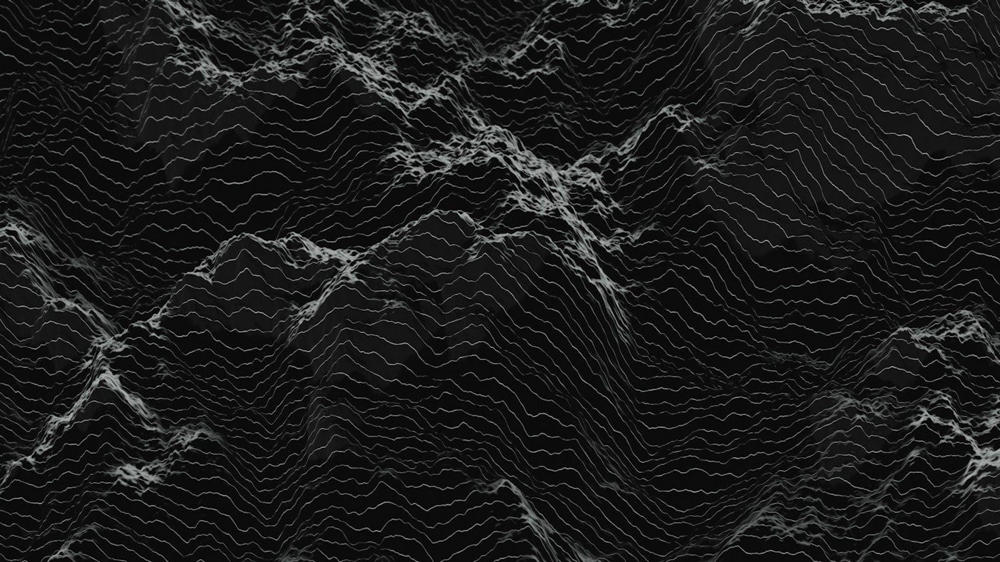

全員が「alignment」を語っているが、解こうとしている問題が違う

2024年5月、OpenAIのSuperalignmentチーム共同リーダーJan Leikeが「安全性の文化が光沢ある製品に敗れた」とXに投稿し、辞任した。同日、Ilya Sutskeverも退社を発表。Leikeは直後にAnthropicに移籍した。「alignment」を最も声高に掲げていた企業で、alignment専門チームが1年で消滅した。この事件は、alignment研究が一枚岩ではないことを世界に示した。
数字は拡大を示している。2024年末時点で、AI alignmentに直接関わる研究者は推定300-400人。2019年の約50人から5年で8倍に増えた。年間投資額は推定3-5億ドル。OpenAI、Anthropic、Google DeepMindの3社だけで全体の60%以上を占め、Open Philanthropyが残りの大部分を非営利機関に配分している。
だが、この「拡大」の内実は均質ではない。Anthropicが解こうとしている問題と、MIRIが解こうとしている問題は、同じ「alignment」という単語を使いながら、射程が根本的に異なる。AnthropicのConstitutional AIは現行のLLMを安全に運用するための即効薬だ。MIRIのAgent Foundationsは超知能が出現した後の数学的整合性を扱う。前者の時間軸は数か月から数年、後者は数十年。前者は実験結果で検証できるが、後者は対象がまだ存在しない。
この記事は、alignment研究の布陣図を描く。誰が、どの問題を、どの時間軸で、誰のカネで解こうとしているか。全体像が見えると、一つの事実が浮かび上がる。alignment研究は、一つの分野ではない。同じ看板を掲げた複数の分野が、協力しているふりをしながら、互いに別の山を登っている。この構造を理解しなければ、「alignmentは解決に向かっている」とも「alignmentは絶望的だ」とも、正確に言えない。
研究者300-400人
alignment研究に専従する研究者の推定総数（2024年末）。2019年の約50人から急増したが、AI研究全体の推定30万人と比較すると0.1%に過ぎない。能力開発に投じられる人材の1,000分の1がalignmentに回っている計算になる。
年間3-5億ドル
alignment研究に投じられる年間資金の推定値。企業の安全性チーム人件費を含む。対照的に、OpenAIの2024年の総支出は推定85億ドル前後。Anthropicの総調達額は約76億ドル。安全性研究はフロンティアモデル開発コストの5-10%程度とみられる。
5つの問い
alignment研究は少なくとも5つの異なる問いを扱っている。現行モデルの制御、解釈可能性、危険な能力の検出、超知能の数学的整合性、そしてalignment概念そのものへの批判。この5つは相補的であると同時に、前提が互いに矛盾する場合がある。
企業4社は、alignmentの異なる側面に社運を賭けている
別の山を登っている、とはどういうことか。まず企業側の布陣から見る。フロンティアモデルを開発する4社 — Anthropic、OpenAI、Google DeepMind、Meta — は、いずれも安全性チームを持つ。しかし、各社がalignmentの中で何を最優先課題と見なしているかは大きく異なる。その差は企業の出自に起因する。Anthropicは2021年にOpenAIの安全性チームから独立した組織であり、安全性研究が存在意義の中心にある。OpenAIのSuperalignmentチームは2023年7月に発足し、2024年5月に事実上解散した。Google DeepMindは2017年のRLHF原論文（Christiano et al.）に共著として関与した研究機関が母体であり、スケーラブルな手法を志向する。Metaはオープンウェイトという戦略的選択によって、安全性の定義そのものが他3社と異なる。
各社のアプローチを並べると、alignmentという概念が企業によってどう再定義されているかが見える。Anthropicにとってのalignmentは、モデルが自社の憲法（Constitution）に従うことだ。OpenAIにとっては、弱いAIで強いAIを監督するスケーラブルな仕組みの構築だった。DeepMindにとっては、人間のフィードバックを効率的に学習に組み込む技術である。Metaにとっては、オープンなモデルをコミュニティが検証できる状態を維持することだ。
| Organization | Core Approach | Key Method | Time Horizon | Status (2025) |
|---|---|---|---|---|
| Anthropic | Constitutional AI + Interpretability | RLHF/RLAIF、Monosemanticity（回路解析）、RSP（Responsible Scaling Policy） | 現行モデル + 次世代 | 安全性チーム100人超。Claude開発と安全性研究が一体化 |
| OpenAI | Superalignment（解散後は分散体制） | Weak-to-strong generalization、Preparedness Framework | 超知能の制御 | 2024年5月にIlya Sutskever退社、Jan Leike辞任。チーム解散。安全性機能はPreparedness等に分散 |
| Google DeepMind | Scalable Alignment | RLHF（2017年、Christiano et al. 共著）、Debate、Constitutional手法の独自実装 | 現行モデル + スケーリング | Gemini Safetyチームとalignment研究チームが並存。産業応用との統合が強み |
| Meta FAIR | Open-weight安全性 | Llama Guard、Purple Llama（安全性ツールキット）、外部検証への依存 | モデル公開後の制御 | Llama 3/3.1のオープンウェイト公開。安全性は「公開前のフィルタリング + コミュニティ検証」の二段構え |
冒頭で触れたOpenAI Superalignmentの解散は、この構造的緊張の帰結だ。「4年以内に超知能のalignmentを解く」と宣言し社内計算資源の20%を充てる公約は、商業的圧力の前に1年で崩壊した。企業がalignmentを再定義するとき、その定義は常に事業戦略に引きずられる。では、商業的制約のない独立機関はどうか。
独立機関とアカデミアは、企業が問えない問いを引き受ける
企業の安全性チームが「出荷可能な安全性」を追求するのに対し、独立研究機関は商業的制約なしにalignmentの根本問題に取り組む。その代償として、彼らの研究成果が実装に反映される保証はない。しかし、この自由こそが独立機関の存在価値である。企業が問えない問い — たとえば「そもそもフロンティアモデルの開発を続けるべきか」や「現在のalignment手法はすべて表層的ではないか」 — を、独立機関だけが問える。
No.05「AI存亡リスク論の系譜」で辿った通り、alignment研究は独立機関から始まった。MIRIは2000年にEliezer YudkowskyがSingularity Institute for Artificial Intelligenceとして設立した組織であり、alignment概念の母体にあたる。ARCは2021年にPaul ChristianoがOpenAIを離れて設立した。CAISは2022年にDan Hendrycksが率いる形で始動した。Redwood Researchは2021年にNate ThomasとBuck Shlegerisが設立した。いずれも設立から5年以内の若い組織である。
MIRI (Machine Intelligence Research Institute)
研究方向 Agent Foundations — 超知能の数学的整合性。論理的不確実性、決定理論、埋め込みエージェンシーなど、現行のMLパラダイムとは直交する問題群を扱う。
特異性 2023年に方針転換。Yudkowskyが「技術的alignment研究は無力」と判断し、国際的な規制（計算資源の管理、開発停止条約）を主張する方向に軸足を移した。研究組織としての活動は縮小中。
人材の輩出 MIRI出身者はAnthropic、OpenAI、ARC、Redwoodに散在している。思想的影響は研究者を通じて企業に浸透している。
ARC (Alignment Research Center)
研究方向 Evals — モデルの危険な能力を評価する手法の開発。GPT-4リリース前にOpenAIから委託されたred-teamingで注目された。
Paul Christiano 元OpenAIの安全性研究者で、RLHFの共同考案者。理論的alignment研究と実証的評価の両方に足を置く稀有な存在。ARC Evalsはモデル評価の業界標準に近い位置を占めつつある。
立ち位置 企業が「私たちのモデルは安全です」と言うとき、それを独立に検証する機能を担う。監査法人に近い役割。
CAIS (Center for AI Safety) / Redwood Research
CAIS Dan Hendrycksが率いる。安全性ベンチマークの開発（MMLU、TruthfulQA等に関与）と、2023年5月の22語声明の発出元。研究より政策と計測に重心がある。
Redwood Research Adversarial training、Causal scrubbingなど、モデルの内部挙動を操作・検証する手法を開発。Anthropicの解釈可能性研究と技術的に近い問題を扱うが、企業の外側から取り組む。
アカデミア
UC Berkeley CHAI Stuart Russellが2016年に設立。CIRL（Cooperative Inverse Reinforcement Learning）を提唱。「AIの目的を人間が明示的に与えるのではなく、AIが人間の行動から推論する」という枠組み。
Oxford FHI（閉鎖） Nick Bostromが2005年に設立したFuture of Humanity Institute。2024年4月に閉鎖。大学官僚制との軋轢が原因とされる。後継の一部はGovAI（Centre for the Governance of AI）として独立。
Cambridge CSER / MIT FutureTech 存亡リスク研究の拠点だが、alignment固有の技術研究よりガバナンスと政策に重心がある。Max Tegmarkの活動はFLI（Future of Life Institute）と重なる。
独立機関に共通する課題は人材流出である。alignment研究者の市場価値は高く、Anthropic、OpenAI、DeepMindは積極的に採用する。MIRI出身のChris Olah（Anthropicの解釈可能性チームのリーダー）、ARC出身のBeth Barnesなど、独立機関で育った人材が企業に移る例は多い。この流れは研究成果の産業移転としては健全だが、独立機関の組織的持続性を蝕む。特にMIRIの縮小は、非営利でalignment研究を維持する困難さの象徴である。
alignment研究の資金構造は、一つの財団と数社の企業に集中している
独立機関が問いを作り、企業が実装し、人材は企業に流れる。この構造が持続するには、独立機関を支える資金が必要だ。ではカネはどこから来ているのか。alignment研究の資金源は大きく3層に分かれる。第1層は企業の自己資金。Anthropic、OpenAI、Google DeepMindの安全性チーム人件費と計算資源は、各社の事業予算から出る。第2層はOpen Philanthropy。Dustin Moskovitz（Facebook共同創設者）とCari Tuna夫妻が設立した財団で、alignment研究の外部資金として最大の出し手である。第3層はSurvival and Flourishing Fund（SFF）、Long-Term Future Fund、各種の小規模助成金。
Open Philanthropyの影響は突出している。ARC、MIRI、CAIS、Redwood Research、UC Berkeley CHAI、Cambridge CSER。主要な独立研究機関のほぼすべてがOpen Philanthropyから助成を受けている。2022年から2024年の累計で、Open PhilanthropyがAI安全分野に拠出した金額は推定2-3億ドル。alignment研究の非企業資金の過半を一つの財団が賄っている。
Public disclosures, 990 filings, press reports / AGI HUB editorial
この資金構造が研究方向に影響を与えていないと考えるのは楽観的すぎる。Open Philanthropyは効果的利他主義（EA）運動と深く結びついており、EA運動は存亡リスク（x-risk）を重視する。結果として、Open Philanthropyの助成先は「AIが人類を絶滅させるリスク」を研究する機関に偏る傾向がある。alignment研究のうち、誤整合の構造や超知能の制御を扱う研究は資金を得やすい。一方で、「AIの公平性」「バイアス除去」「労働市場への影響」といった、x-riskとは直接結びつかないが社会的に重要なテーマは、alignment研究の資金フローから外れがちである。
2022年11月のFTX破綻はこの構造を直撃した。Sam Bankman-Friedとその関連組織（FTX Foundation、Alameda Research）は、EA運動とalignment研究の主要資金源の一つだった。推定で数億ドル規模の助成が凍結または消失した。SFFやLTFFの一部資金もFTX関連だった。Open Philanthropy単独への依存度はさらに高まった。
2030年に残るのは「解釈可能性」と「評価」、淘汰されるのは「数学的整合性」
企業は事業戦略にalignmentを引きずり、独立機関は人材を企業に奪われ、資金は一つの財団に集中している。この構造のまま2030年を迎えたとき、布陣図はどう変わっているか。予測は外れうるが、逃げ表現で括弧付きの「かもしれない」を並べるより、根拠を示した上で言い切った方が検証可能である。
予測の軸は「スケーリング則の継続」という前提条件である。2025年時点で、GPT-4クラスのモデルが2026年から2027年にかけてさらに1-2桁スケールする見通しが複数の推計から示されている。この前提が成立するなら、alignmentへの実需は急増する。企業は「出荷する前にモデルが何をしているか理解する」必要に迫られる。この実需に最も直接応えるアプローチが、解釈可能性（Interpretability）と評価（Evals）である。
Interpretability
Anthropicのモノセマンティシティ研究（2023年のToy Models of Superposition、2024年のScaling Monosemanticity論文）は、モデルの内部状態を人間が読める形に変換する道を開いた。この研究路線はモデルのスケーリングと並走できるため、企業の実需に直結する。2030年にはalignment研究の主流になっている。
Evals (評価)
ARCが先鞭をつけた独立評価は、AI規制の標準化と結びつく。政府が「モデルを公開する前に評価しろ」と要求する限り、評価手法への需要は消えない。EU AI ActやUS Executive Orderが制度的にevalを要求する方向性は不可逆。
Constitutional AI / RLHF系
現行モデルの制御手法として生き残るが、「alignment研究」というよりプロダクトエンジニアリングの一部に吸収される。研究としての独自性は薄まる。
Agent Foundations
MIRIの数学的alignment研究は、対象が超知能に限定されているため実証が困難。MIRI自身が2023年に研究方針を転換した。後継者が現れなければ、2030年にはアカデミアの少数派論文として残存する程度になる。
d/acc批判
Vitalik Buterinが提唱するd/acc（Defensive Acceleration）は、alignment研究そのものを「中央集権的発想」と批判する。オープンウェイト、分散型検証、プライバシー技術による防御を主張。2030年にalignment研究の主流にはならないが、企業主導のalignmentへの対抗言語として影響力を持つ。
これらの予測を一言で要約すると、alignment研究は哲学から工学に移行する。MIRIが2000年に始めた「超知能と人類の関係をどう設計するか」という哲学的問いは、「モデルの内部を可視化し、危険な振る舞いを公開前に検出する」という工学的問いに置き換わりつつある。この移行は良くも悪くも不可避である。工学的問いへの回答は計測可能で、資金を呼び、規制と接続する。哲学的問いへの回答は計測困難で、資金を失い、政策に反映されにくい。建築に喩えると、「この建物は地震で倒れないか」は工学で答えられるが、「そもそもこの場所に建てるべきか」は工学の範囲外だ。alignment研究で今起きているのは、後者の問いが前者に飲み込まれていく過程に他ならない。
ただし、ここに一つの危険が潜む。工学的alignmentが「モデルを安全に出荷する技術」に矮小化されるとき、Yudkowskyが本来提起した「知能の爆発的拡大に人類はどう対処するか」という問いは宙に浮く。2030年時点でAGI（汎用人工知能）が達成されていなければ、この問いは学者の空論にとどまる。しかし技術爆発が現実になれば、工学的alignmentでは手が届かない領域が一気に露出する。冒頭のSuperalignment解散を思い出してほしい。「光沢ある製品」が安全性の文化に勝ったあの事件は、alignment研究全体の縮図だ。最も声高にalignmentを掲げた企業で、最も野心的なチームが最も早く消えた。「布陣図」は結局のところ、最悪のシナリオに対する備えが十分かどうかを問うための地図である。そしてこの地図が示しているのは、最前線で戦っている人間が最も少ない、という事実だ。